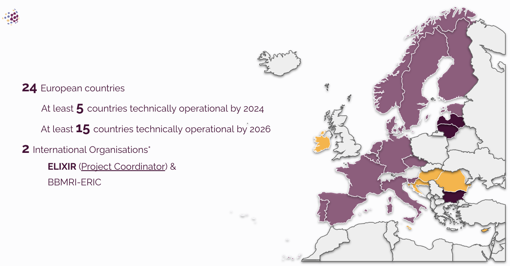

About Genomic Data Infrastructure Ireland
Genomic Data Infrastructure (GDI) Ireland is the Irish arm of the European GDI project which aims to create federated genetic data infrastructures across Europe to allow for safe and secure sharing of genomic data.
Click here to learn about key terms related to genetics and genomics.
A federated genetic data infrastructure will allow countries taking part in the project to collaboratively share data while storing the data in their own country. This ensures data privacy and protection. Access to analyse the data will only be granted to individuals after a review process.
Ireland has committed to the onboarding stage of the overall European GDI project, which means that over the next 4 years we will develop a proof-of-concept infrastructure that will be tested using artificial genetic data first. This is to ensure that the infrastructure works correctly and is safe and secure.

This work follows the Beyond 1 Million Genomes (B1MG) project and is part of the implementation of the 1+Million Genomes (1+MG) initiative, which Ireland officially joined in 2022.
![This image is a timeline of the 1+ million genomes initiative. First we see the 1+ million genomes logo which is a blue and white circle in the shape of 3 faces. Under this text reads 2018-present 1+MG launched as an EU member states declaration. Next is the beyond one million genomes logo which is the same as the 1+mg logo but is green. Text underneath this reads 2020-2023 B1MG coordinated agreement on standards and best practices. Next is the genomic data infrastructure project logo. It is a collection of interconnected circles that make a sphere shape. Text underneath this reads 2022-2026, GDI is creating the infrasructure needed to realise 1+MG. A green box next to this shows the Irish national strategy for accellerating genetic and genomic medicine in Ireland at the same point in the timeline.](images/timeline.png)